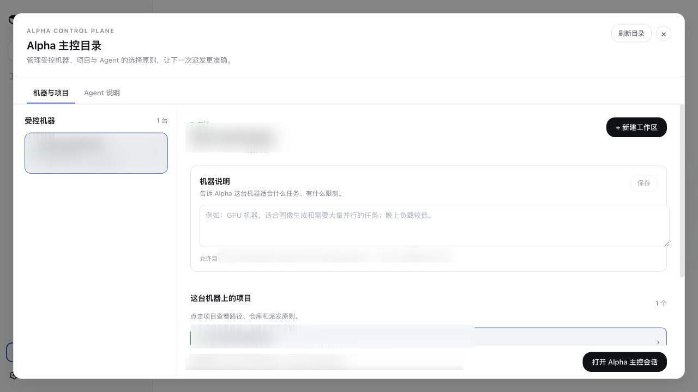
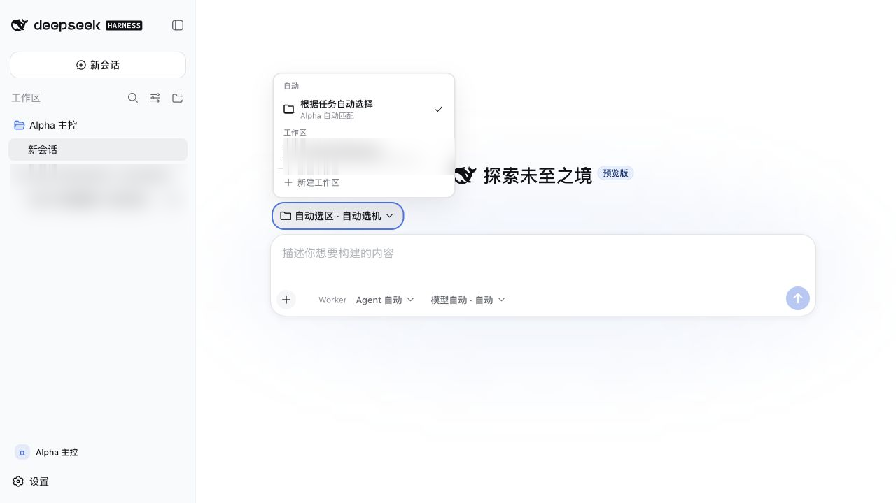
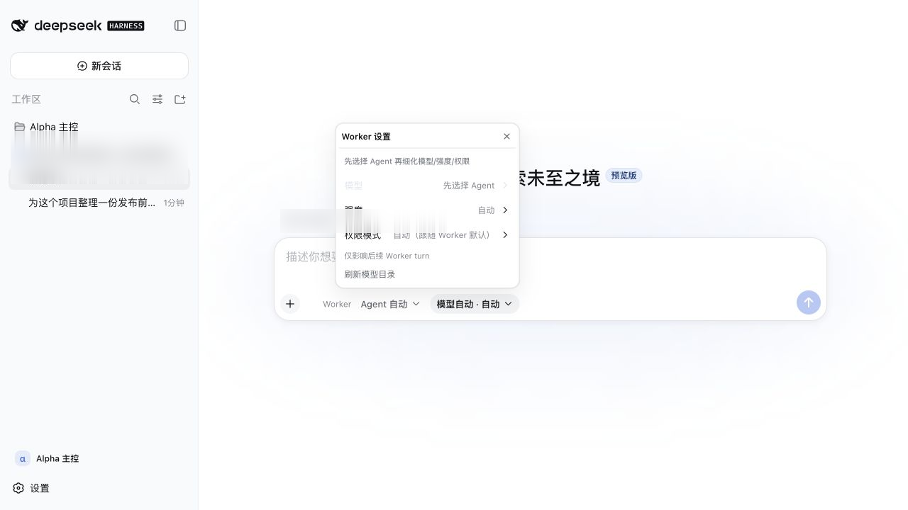

A path is not project identity
The same repository lives at different paths. dsh-alpha groups canonical Git identities and lets each Worker resolve its own safe location.
DSH orchestration plugin
Turn different machines, paths, and runtimes into one visible global inventory. A task leaves the same conversation with an explicit workspace, permission boundary, and recovery path.
The missing layer
It is getting a task to the right machine, repository, runtime, and permission boundary—and still knowing what happened after an approval or connection failure.
The same repository lives at different paths. dsh-alpha groups canonical Git identities and lets each Worker resolve its own safe location.
Machine status, Agent capabilities, load, and workspace affinity share one inventory for both automatic and manual routing.
Durable task IDs and an event stream mean an interrupted wait is not a cancellation, and missing events can be replayed after reconnect.
Control loop
All five steps remain in one Alpha session. Keep automation flexible, or pin the Agent, model, effort, and permission mode for a critical turn.
Combine live machines, workspaces, and Agents.
Choose a project or machine, or keep routing automatic.
Receive a task ID and stream progress events.
Bring remote permission requests back to the session.
Replay missing events and resume the same task.
Product tour
The control directory, global workspace selector, Worker routing, and model/permission controls all live inside DSH Web. Project-related details are redacted.



Launch note
When product code, build toolchains, and test services live in different environments, the number of agents is not the main problem. Machine reachability, repository identity, capability differences, permissions, and recovery are what need a control plane.
dsh-alpha does not decide which Agent is always best. It keeps the reason for this turn's choice visible.
Each Worker discovers only the workspaces inside its allowed roots. The master groups locations by repository identity, then resolves the selected Worker's own path at execution time. On-demand clones remain inside the Worker's boundary.
The Gateway refuses to start without tokens. Paths must pass allowed-root checks. Health endpoints do not reveal identities or secrets. Worker doctor is read-only and never prints the token. Provider CLIs still keep their own authentication and permission models.
Configure a narrow allowed root on one remote machine, run Worker doctor, and verify discovery, capabilities, and result delivery. Add the next machine only after the first control loop is clear.
Quick start
Install the plugin and Alpha preset, then open the control directory from the sidebar. Remote Workers can join one at a time.
Full documentation# Install the Web plugin dsh plugin --profile web add dsh-alpha # Install the Alpha preset node ~/.dsh/profiles/web/node_modules/\ dsh-alpha/scripts/install-preset.mjs # Start DSH Web dsh web